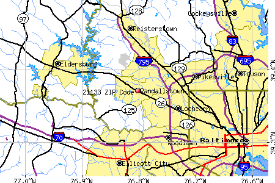

Research Projects |
So many questions! OK, all you Google experts, let's dig out as much info as we can. Email answers, or new questions, to us. We'll post them on this page and maybe some Weimar family member will come up with something pertinent. |
From Ruthie, Feb 18, 2005: Q. What ship did the Weimars come over on? All we know is that it went from Bremen, Germany to Baltimore, USA in 1867 ('68, '69?) March 10: This one is solved! It was the steamship OHIO on Sept. 27th, 1869 Yay! Click on link above to see the ship. From Ruthie, Feb. 18, 2005 Q. Who were the parents of Christian Latt and of his wife Catherine (Elwanger) Latt? When did their ancestors come to America? |
Back to Welcome |
To Steamship OHIO |

Here's what I found on the Latts so far; (The dates are births. My comments are in blue.) |
1870 US Census Catharine Latt Philadelphia Ward 19 Dist 57 (2nd Enum), Philadelphia, PA abt 1846 Female She was born Catharine Elwanger, in Wurtemburg, Germany. Christian Latt Philadelphia Ward 19 Dist 57 (2nd Enum), Philadelphia, PA abt 1842 Male He was born in Prussia, Germany. He was listed as a "boilermaker" in the 1900 US census. Elizabeth Latt Philadelphia Ward 19 Dist 57 (2nd Enum), Philadelphia, PA abt 1867 Female She died at age 4 yrs. 6 mos. Her obituary is pasted into the family bible. Her mother, Catharine must have been pregnant with Emma who was born in 1871. So strange that Emma's little girl Katherine died at the same age. Elizabeth Latt Philadelphia Ward 19 Dist 57 (2nd Enum), Philadelphia, PA abt 1808 Female This must have been Christian's mother. Louisa Latt Philadelphia Ward 19 Dist 57 (2nd Enum), Philadelphia, PA abt 1848 Female I guess she was Christian's sister. |
Other Latt children: Emma 1871 Harry 1875 Fred 1876 Charlie 1878 Katie 1880 Walter ? (He was the youngest) |

From Ruthie: Here's a modern map showing Randallstown in NW Baltimore County, where the Weimars first settled. |